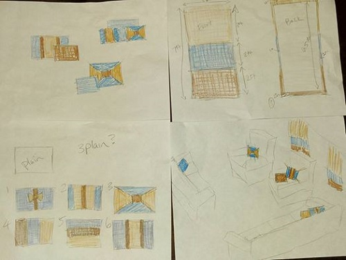
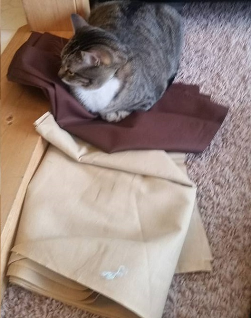

Green Apron
Size-Large
Perfect for your little baker!
Elsa Costume
Size-Medium
Inspired by the disney movie Frozen!
I have been, i’ll call it “blessed” (in an effort to remain positive), with some extra time in the last few weeks. Removing of course the time spent searching for new employment, budgeting/cutting back, and watching my now hyper-mobile 15 month-old, I have several hours to dedicate to a very special project. A close friend was looking for some specific décor for his home namely in the form of curtains. Primarily to avoid the assumed peeping from nearby neighbors but secondarily to give his living space a comfortable and homey vibe. He came to me with this idea and I jumped on the opportunity to not only customize his space but also to gain more material for this blog (pardon the pun?). Starting a project of any size requires a carefully laid plan, which I decided to forgo in favor of this…
The story ends with us walking out with a heap of fabric and what I can only imagine was a cartoonish image of myself as Charlie Brown in the school spelling bee… just substituting numbers for words. This may seem overly dramatic but I really don’t recommend this method. Once at home the rational me returned and with her also the excitement for this project. I started by sketching some incredibly crude drawings of my plan and also did my math. Properly. While doing this I realized I had enough fabric to make other accessories like tie-backs and even additional pillows! What’s the point of detailing these events for you? It’s not simply because in hindsight I find my antics amusing… especially because I was trying to show off my prowess. But more a reminder to do your math BEFORE you go to the store because once fabric is cut you can ONLY sew it back together, which leaves a seam, not the end of the world but easily avoidable. This did illustrate a very good rule of thumb “when in doubt ALWAYS overestimate” no one ever complains about getting more. Another takeaway could be that somehow I still have friends despite my spazzy nature, or he’s just putting up with me because he’s going to be getting some super bomb customized curtains.
Shout out to my special helper…
Follow along with my installment of Part two “No plans, No patterns, No Problem”